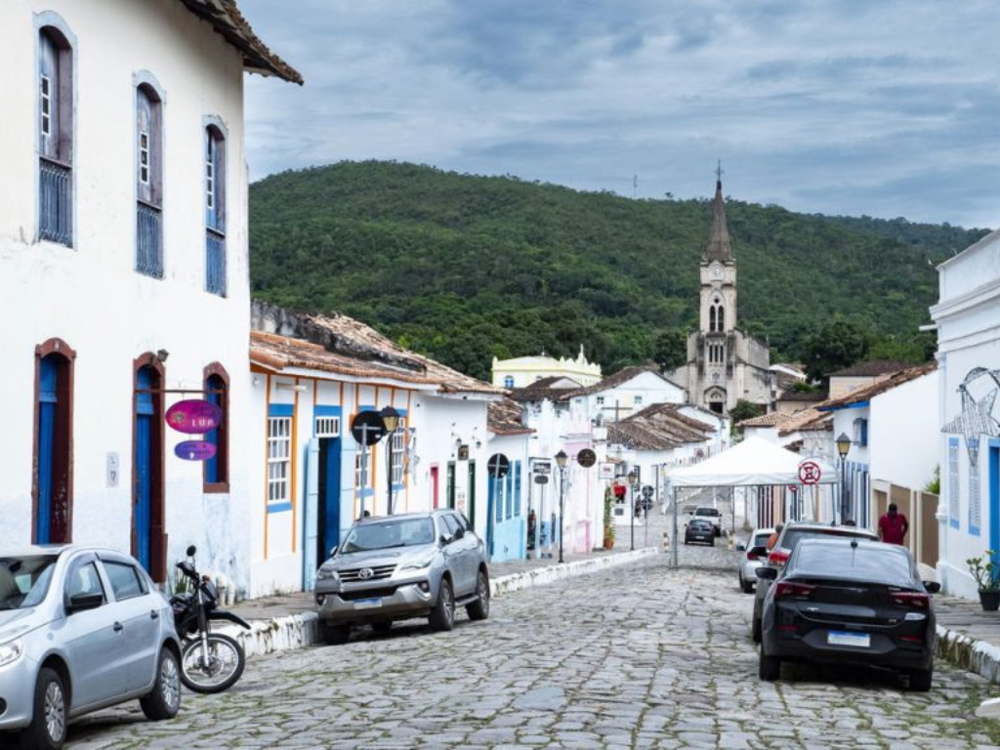

O Goiás está localizado na região Centro-Oeste do Brasil e é conhecido por sua forte atividade agropecuária e pela importância econômica no cenário nacional. O estado possui paisagens marcadas pelo Cerrado, com grande diversidade de fauna e flora, além de rios, cachoeiras e áreas de preservação ambiental. Sua capital, Goiânia, é um importante centro urbano, econômico e cultural, com destaque para sua qualidade de vida e planejamento urbano. Goiás também abriga cidades históricas, como Pirenópolis, conhecidas pelo patrimônio colonial e pelas festas tradicionais. A economia goiana é baseada principalmente na agropecuária, na indústria, no comércio e na mineração, consolidando o estado como um dos mais relevantes do Centro-Oeste brasileiro.

Voltar